SCP: Spatial Causal Prediction in Video
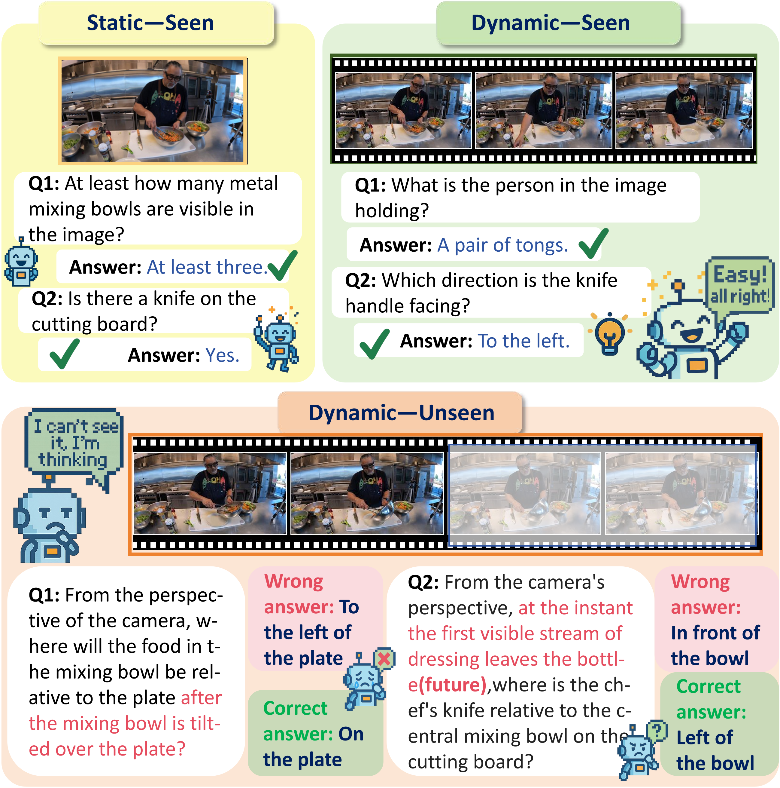
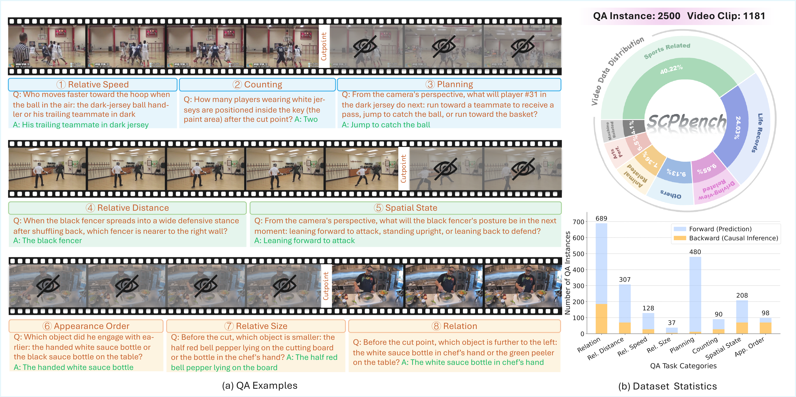
Abstract
Spatial reasoning, the ability to understand spatial relations, causality, and dynamic evolution, is central to human intelligence and essential for real-world applications such as autonomous driving and robotics. Existing studies, however, primarily assess models on visible spatio-temporal understanding, overlooking their ability to infer unseen past or future spatial states. In this work, we introduce Spatial Causal Prediction (SCP), a new task paradigm that challenges models to reason beyond observation and predict spatial causal outcomes. We further construct SCP-Bench, a benchmark comprising 2,500 QA pairs across 1,181 videos spanning diverse viewpoints, scenes, and causal directions, to support systematic evaluation. Through comprehensive experiments on 23 state-of-the-art models, we reveal substantial gaps between human and model performance, limited temporal extrapolation, and weak causal grounding. We further analyze key factors influencing performance and propose perception-enhancement and reasoning-guided strategies toward advancing spatial causal intelligence.
Comparison with spatial reasoning benchmarks
Comparison with existing benchmarks. Modality denotes the input type. Dynamic/Static
indicates whether the scene content itself undergoes temporal changes, rather than mere camera movement.
View Type specifies whether the questions involve single or multiple viewpoints.
Perspective denotes whether the benchmark includes explicitly designed ego (first-person) and exo
(third-person) perspective settings. Causal Reasoning indicates whether the benchmark requires
inferring outcomes or states driven by causal dependencies. Seen/Unseen reflects whether the
queried information is directly observable within the given visual content.
| Benchmark | QA pairs | Modality | Dynamic/Static | View Type | Perspective | Causal Reasoning | Seen/Unseen | ||
|---|---|---|---|---|---|---|---|---|---|
| Single | Multi | Ego | Exo | ||||||
| 3DSRBench | 3,772 | Image | Static | ✓ | ✗ | ✗ | ✓ | ✗ | Seen |
| InternSpatial-Bench | 6,008 | Image | Static | ✓ | ✗ | ✗ | ✓ | ✗ | Seen |
| OmniSpatial | ~8,400 | Image | Static | ✓ | ✗ | ✓ | ✓ | ✗ | Seen |
| Spatial457 | 23,752 | Image | Static | ✓ | ✗ | Undeclared | ✗ | Seen | |
| All-Angles Bench | ~2,100 | Image | Static | ✗ | ✓ | Undeclared | ✗ | Seen | |
| EmbSpatial-Bench | 3,640 | Image | Static | ✓ | ✗ | ✓ | ✗ | ✗ | Seen |
| MMSI-Bench | 1,000 | Image | Static | ✗ | ✓ | Undeclared | ✗ | Seen | |
| MindCube | 21,154 | Image | Static | ✗ | ✓ | Undeclared | ✗ | Unseen | |
| VSI-Bench | 5,130 | Video | Static | ✓ | ✗ | ✓ | ✗ | ✗ | Seen |
| VLM4D | ~1,800 | Video | Dynamic | ✓ | ✗ | ✓ | ✓ | ✗ | Seen |
| STI-Bench | 2,064 | Video | Dynamic | ✓ | ✗ | ✓ | ✓ | ✗ | Seen |
| DSI-Bench | ~1,700 | Video | Dynamic | ✓ | ✗ | Undeclared | ✗ | Seen | |
| SCP-Bench (Ours) | 2,500 | Video | Dynamic | ✓ | ✓ | ✓ | ✓ | ✓ | Unseen |
Construction Pipeline

How Well Do Current Models Perform?
Evaluation on SCP-Bench. "Avg." indicates the overall average accuracy. For each category, the best-performing closed model and open-source model in average score are highlighted in deep blue, and best performance on each task is boxed.
| Model | Avg. | App. Ord. | Count. | Plan. | Rel. | Rel. Dist. | Rel. Size | Rel. Speed | Spat. State |
|---|---|---|---|---|---|---|---|---|---|
| Human Performance | 89.61 | 97.60 | 81.20 | 92.26 | 85.70 | 86.70 | 97.62 | 91.61 | 84.17 |
| ● Closed Models | |||||||||
| GPT-5 | 66.24 | 79.04 | 58.12 | 59.06 | 64.07 | 70.48 | 95.24 | 77.42 | 65.11 |
| Gemini 2.5 Pro | 55.84 | 69.28 | 54.87 | 52.76 | 46.20 | 63.47 | 88.10 | 67.10 | 62.41 |
| Gemini 2.5 Flash | 52.10 | 59.28 | 52.14 | 51.74 | 43.14 | 57.75 | 88.10 | 66.45 | 55.60 |
| Claude Sonnet 4.5 | 56.14 | 68.86 | 52.14 | 57.43 | 45.65 | 60.90 | 80.95 | 68.39 | 63.90 |
| ● Open-source Models | |||||||||
| Qwen3-VL-2B | 43.04 | 41.92 | 42.74 | 45.01 | 40.85 | 44.41 | 59.52 | 47.10 | 40.65 |
| Qwen3-VL-8B | 47.52 | 54.49 | 51.28 | 49.29 | 42.33 | 49.47 | 90.48 | 46.45 | 46.40 |
| Qwen3-VL-30B-A3B | 54.16 | 65.27 | 52.14 | 54.79 | 46.22 | 56.65 | 85.71 | 66.45 | 57.19 |
| Qwen3-VL-32B | 56.84 | 59.88 | 51.28 | 58.66 | 52.63 | 57.98 | 90.48 | 67.10 | 55.04 |
| Qwen3-VL-235B-A22B | 61.04 | 67.07 | 54.70 | 60.90 | 55.03 | 63.03 | 97.62 | 74.84 | 63.31 |
| Qwen3-Omni-30B-A3B | 53.60 | 63.47 | 55.56 | 53.56 | 47.03 | 53.72 | 88.10 | 65.81 | 55.40 |
| InternVL3.5-8B | 50.52 | 59.88 | 54.70 | 54.79 | 43.82 | 54.52 | 61.90 | 58.71 | 44.96 |
| InternVL3.5-38B | 53.56 | 62.28 | 53.85 | 56.01 | 46.34 | 57.98 | 90.48 | 65.81 | 48.20 |
| InternVL3.5-241B-A28B | 56.96 | 67.07 | 60.68 | 61.10 | 46.11 | 60.37 | 90.48 | 68.39 | 60.07 |
| MiniCPM-V-4.5 | 43.80 | 53.29 | 49.57 | 43.99 | 36.04 | 49.20 | 76.19 | 52.26 | 42.81 |
| DeepSeek-VL2 | 38.08 | 45.51 | 38.46 | 39.51 | 29.41 | 45.74 | 73.81 | 53.55 | 33.81 |
| NVILA-8B | 34.40 | 36.53 | 36.75 | 38.09 | 30.66 | 30.05 | 59.52 | 38.71 | 37.05 |
| NVILA-15B | 45.28 | 54.49 | 45.30 | 48.07 | 35.35 | 52.13 | 73.81 | 50.97 | 49.28 |
| LLaVA-OneVision-7B | 36.48 | 42.51 | 37.61 | 37.07 | 31.24 | 38.30 | 64.29 | 46.45 | 35.61 |
| LLaVA-OneVision-70B | 50.84 | 64.67 | 52.99 | 48.68 | 44.39 | 53.46 | 78.57 | 61.94 | 51.80 |
| LLaVA-OneVision-1.5-8B | 45.52 | 56.29 | 47.01 | 46.44 | 39.13 | 50.27 | 80.95 | 51.61 | 41.73 |
| LLaVA-NeXT-Video-7B | 36.60 | 43.11 | 25.64 | 35.44 | 29.52 | 48.40 | 54.76 | 54.84 | 32.73 |
| ● Spatial Models | |||||||||
| Spatial-MLLM | 39.76 | 45.51 | 28.21 | 33.81 | 38.33 | 49.73 | 66.67 | 50.97 | 32.37 |
| SpaceR | 41.36 | 52.10 | 34.19 | 40.53 | 34.90 | 45.21 | 59.52 | 54.19 | 44.60 |
Overall Evaluation Results. Table 2 summarizes the overall performance of MLLMs on SCP-Bench. Current systems remain far below human level, underscoring the substantial gap in spatial causal prediction. GPT-5 attains the highest accuracy (66.24%), followed by Qwen3-VL-235B (61.04%) and InternVL3.5-241B (56.96%). Notably, several open-source models match or surpass proprietary ones on specific tasks, for example, outperforming GPT-5 in Counting and Planning and achieving comparable results in Relative Size, Relative Speed, and Spatial State. At the level of question types, the difficulty landscape becomes clearer. Relative Size is consistently the easiest, whereas Object Relations, Planning, and Counting are the most challenging, as they require more abstract spatial causal reasoning and higher-order object interaction understanding.
We further examine performance across perspectives, causal directions, and scenarios (Fig. 6). Models exhibit clear difficulty with multi-view prediction compared to single-view reasoning, indicating limited perspective correspondence. In causal directionality, models perform better when inferring past (backward) events than future (forward) ones, likely because reasoning from known outcomes is easier than anticipating unseen consequences. Finally, model performance remains relatively balanced across different scene categories, with slightly stronger results in driving-related and factory/machine environments.
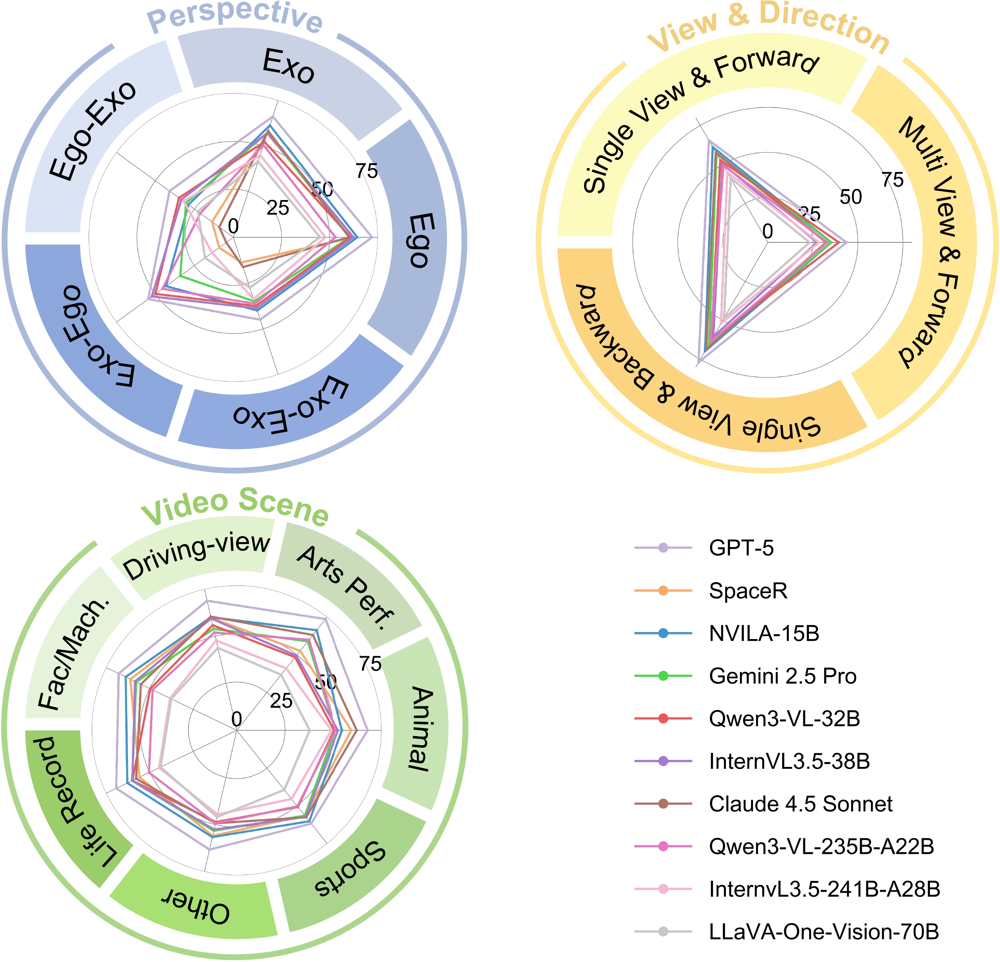
Temporal Extrapolation Horizon. We compare short-, medium-, and long-range prediction windows and observe only limited variation across ranges. This suggests current models are not truly benefiting from stronger long-horizon extrapolation, and often rely on local cues rather than robust temporal causal modeling.
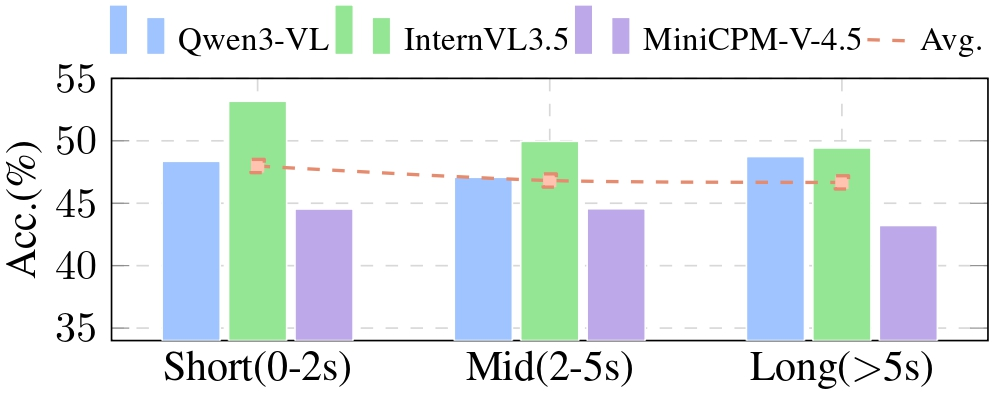
Causal Consistency. Case-level analysis shows that even when models capture local motion, they may violate basic physical causality in final judgments. In other words, perceptual fluency does not always translate into causally consistent prediction for unseen spatial states.
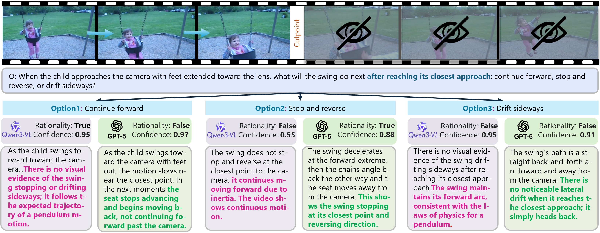
Key Takeaways
- SCP remains a strong challenge for current MLLMs.
- Large open-source models are increasingly competitive with closed models.
- Performance differences across temporal ranges are relatively small.
What Affects Spatial Causal Prediction?
Perception vs. Reasoning. Controlled experiments indicate that reasoning is the dominant limitation. When models are given the unseen target segment directly, performance rises noticeably; when only textual surrogates are provided, gains are limited and unstable. This implies that better perception alone is insufficient without stronger causal inference.
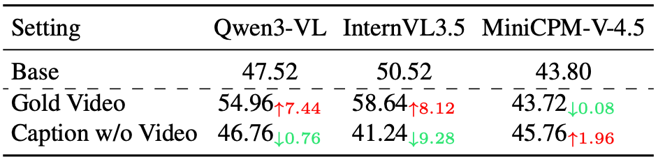
Single-Frame vs. Multi-Frame Reasoning. In several settings, using only the cutpoint frame performs similarly to, or slightly better than, using full visible video. This reveals that many models still fail to exploit temporal continuity and mostly depend on static spatial cues.
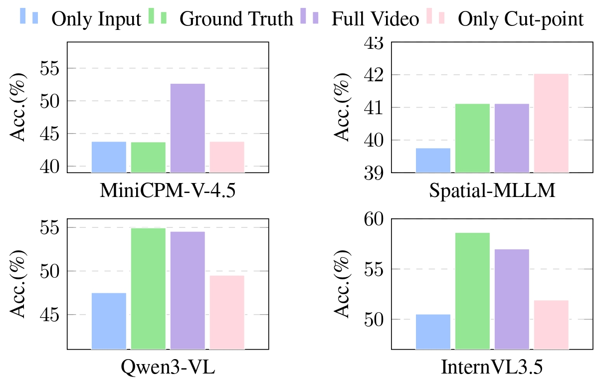
Sensitivity to Temporal Causality. After temporally flipping input videos, accuracy drops are generally small. The weak sensitivity to temporal inversion further suggests that current models do not yet form stable causal direction representations.
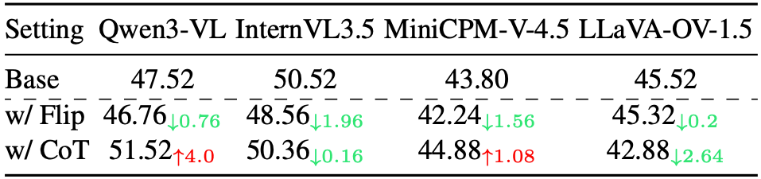
Is Visual Input Necessary? Yes. Removing video input leads to clear degradation, and dense captions only partially compensate. Visual evidence remains essential for spatial causal prediction, especially when fine-grained motion and interaction details determine the answer.
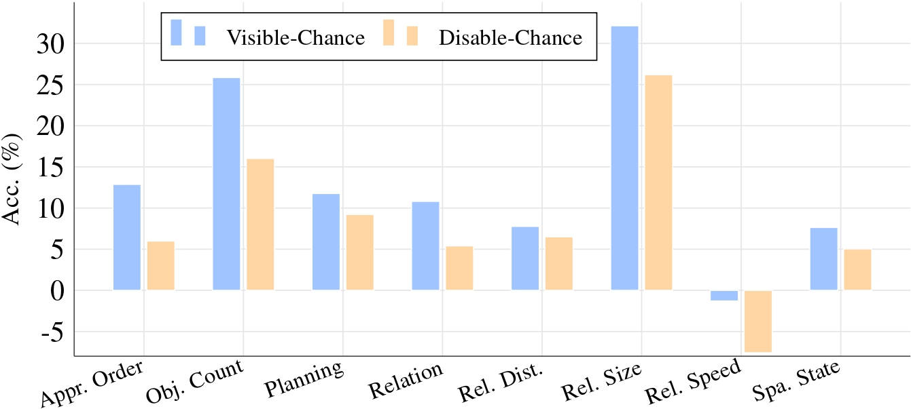
Key Takeaways
- Both perception and reasoning limitations contribute to SCP errors.
- Visual input remains essential for reliable spatial causal prediction.
- Current models still lack stable temporal-causal logic in video reasoning.
How to Improve Spatial Causal Prediction?
Scaling Up Model Size. Larger models consistently provide the strongest gains on SCP-Bench. While small-scale increases can be noisy, substantial scale jumps deliver clear improvements, making scale-up the most reliable baseline strategy.
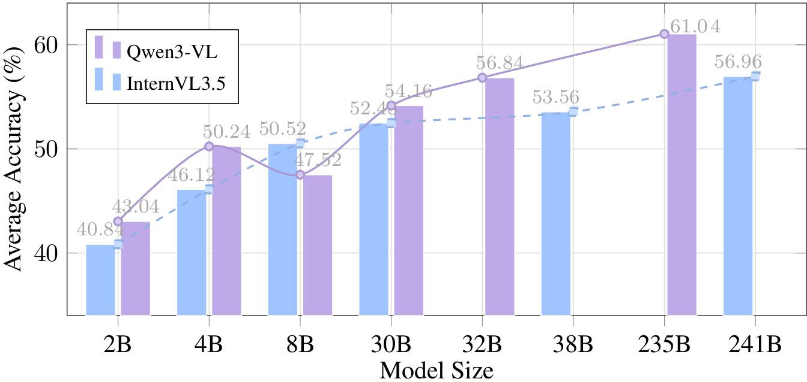
Reasoning Strategies (CoT / Self-Think). Vanilla CoT can help some models, but improvements are not universal. Self-think modes also show mixed effects and may introduce extra reasoning noise. Overall, prompting-level reasoning tricks alone are not sufficient.
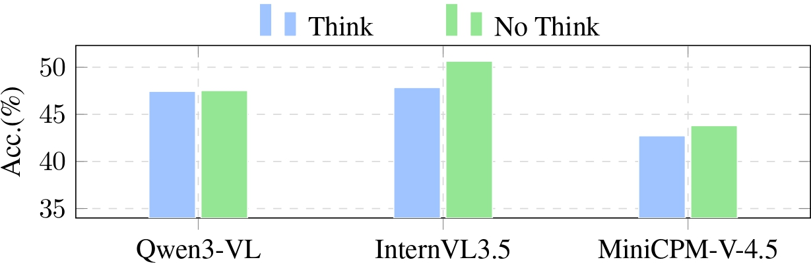
Perception Enhancement. Adding dense captions or spatial-interaction graphs yields only modest average gains. These methods can help specific categories, but they do not fundamentally resolve causal prediction errors.
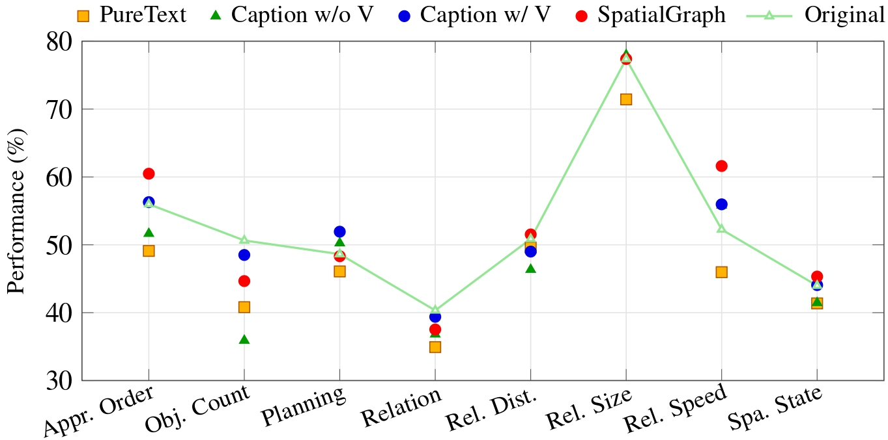
Unseen Causal Scaffolds. Injecting future-oriented auxiliary signals is promising, especially textual causal scaffolds generated by strong LLMs. Compared with image/video scaffolds, text-based guidance is easier for current MLLMs to absorb and often produces more stable improvements.
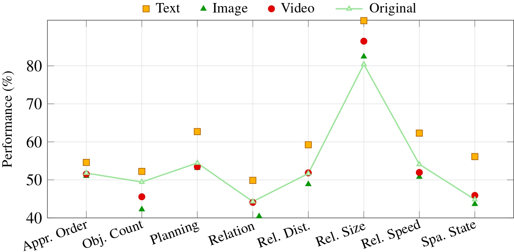
Key Takeaways
- Scaling up model size yields the most consistent gains on SCP.
- Unseen spatial causal scaffolds can effectively improve performance.
- Vanilla CoT and self-thinking provide only limited average gains.
Conclusion
We introduce Spatial Causal Prediction (SCP) and SCP-Bench, establishing a new paradigm for predictive spatial reasoning beyond visible scenes. Extensive evaluations indicate that current MLLMs remain far from human-level performance, performing better on past inference than future prediction, and relying mainly on perceptual cues. In-depth controlled analyses show that reasoning, rather than perception, constitutes the major bottleneck. While explicit reasoning and structured spatial representations bring limited gains, notably scaling up and integrating causal scaffolds offer a promising path for better SCP performance.